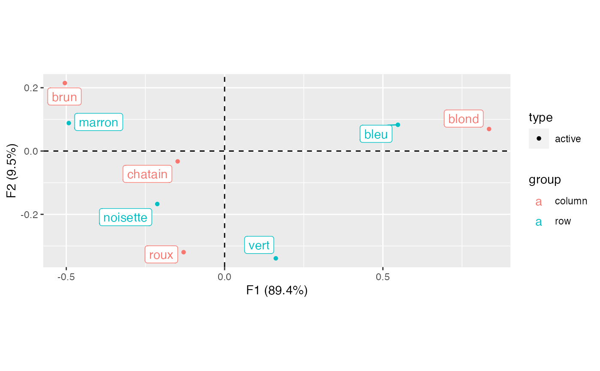
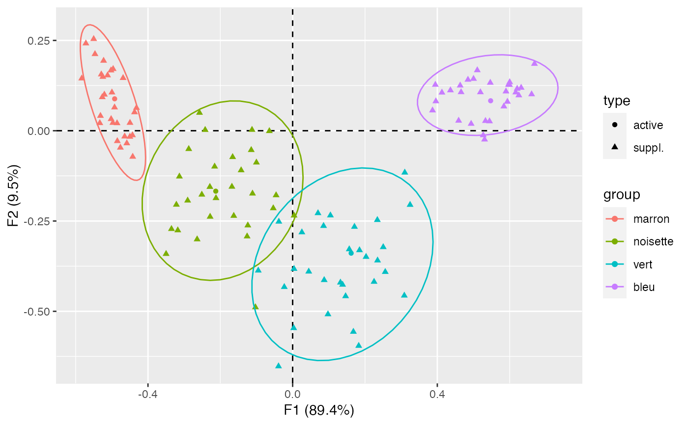
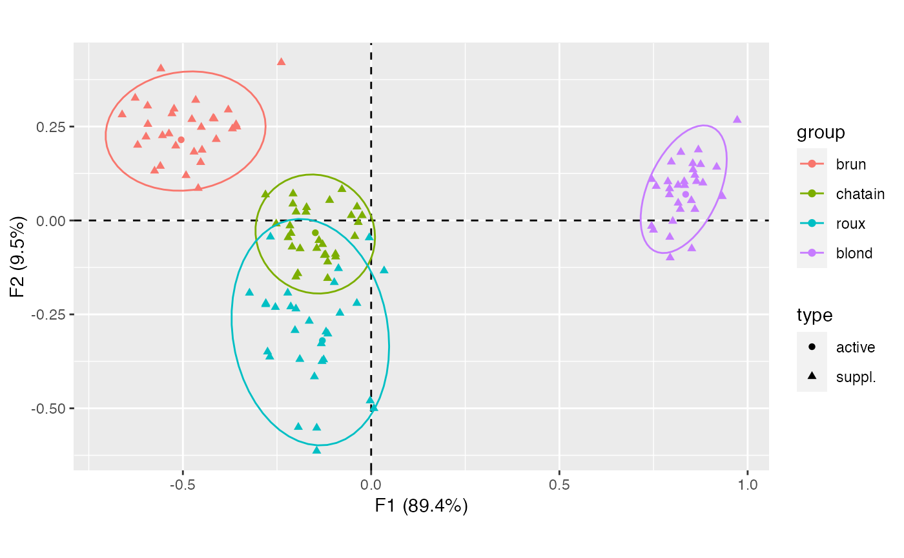
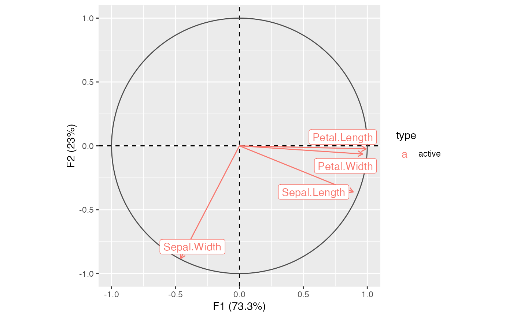
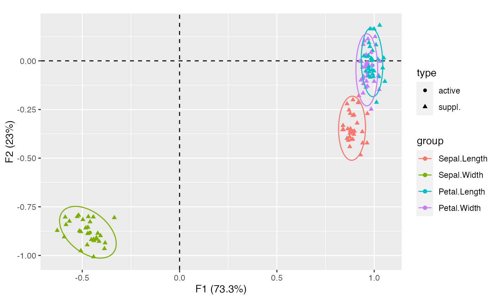

Checks analysis with partial bootstrap resampling.
bootstrap(object, ...) # S4 method for CA bootstrap(object, n = 30) # S4 method for PCA bootstrap(object, n = 30)
| object | |
|---|---|
| ... | Currently not used. |
| n | A non-negative |
A BootstrapCA or BootstrapPCA object.
Greenacre, Michael J. Theory and Applications of Correspondence Analysis. London: Academic Press, 1984.
Lebart, L., Piron, M. and Morineau, A. Statistique exploratoire multidimensionnelle: visualisation et inférence en fouille de données. Paris: Dunod, 2006.
N. Frerebeau
#>## Partial bootstrap on CA ## Data from Lebart et al. 2006, p. 170-172 color <- data.frame( brun = c(68, 15, 5, 20), chatain = c(119, 54, 29, 84), roux = c(26, 14, 14, 17), blond = c(7, 10, 16, 94), row.names = c("marron", "noisette", "vert", "bleu") ) ## Compute correspondence analysis X <- ca(color) ## Plot results plot(X) + ggrepel::geom_label_repel()
## Bootstrap (30 replicates) Y <- bootstrap(X, n = 30) # \donttest{ ## Get replicated coordinates get_replications(Y, margin = 1)#> , , 1 #> #> F1 F2 F3 #> marron -0.52269673 0.19377763 -0.12141141 #> noisette -0.11098916 -0.17392549 0.11652959 #> vert -0.03818591 -0.25170419 -0.15044025 #> bleu 0.59374119 0.08028934 0.01301556 #> #> , , 2 #> #> F1 F2 F3 #> marron -0.4855308 0.02082161 -0.0978831 #> noisette -0.1424214 -0.10946649 0.1918751 #> vert 0.1321227 -0.42033566 -0.2589972 #> bleu 0.6685945 0.18520081 -0.0345444 #> #> , , 3 #> #> F1 F2 F3 #> marron -0.4371524 0.051147167 0.04615770 #> noisette -0.2418871 0.002250923 0.24084237 #> vert 0.2560398 -0.390938795 -0.11031124 #> bleu 0.5464480 0.132859203 -0.09206003 #> #> , , 4 #> #> F1 F2 F3 #> marron -0.44974987 0.02181855 0.01236730 #> noisette -0.33506749 -0.27201694 0.13724923 #> vert 0.07007383 -0.22817442 0.20055538 #> bleu 0.50011112 0.14369012 -0.06168052 #> #> , , 5 #> #> F1 F2 F3 #> marron -0.49239767 0.06456969 -0.16749950 #> noisette -0.26410187 -0.30068068 -0.08175840 #> vert 0.02550722 -0.28121459 0.07618896 #> bleu 0.63177101 0.11899870 -0.03532859 #> #> , , 6 #> #> F1 F2 F3 #> marron -0.4500676 -0.0166651 -0.035948826 #> noisette -0.2903014 -0.1932543 -0.082589071 #> vert 0.1565435 -0.3281969 -0.345870984 #> bleu 0.5968637 0.1274774 -0.002281239 #> #> , , 7 #> #> F1 F2 F3 #> marron -0.4970790 0.02179409 0.015992272 #> noisette -0.2511066 -0.17688330 0.219797390 #> vert 0.2029582 -0.34920302 -0.176157834 #> bleu 0.4127156 0.10566033 0.007346602 #> #> , , 8 #> #> F1 F2 F3 #> marron -0.4687965 0.1459466 -0.02776319 #> noisette -0.2288635 -0.1554993 -0.01176761 #> vert 0.1679224 -0.5566159 -0.17153861 #> bleu 0.3945663 0.1272687 0.12729656 #> #> , , 9 #> #> F1 F2 F3 #> marron -0.5290812 0.15597885 -0.14679625 #> noisette -0.0535892 -0.21456912 0.14455070 #> vert 0.1826818 -0.59556961 -0.28733117 #> bleu 0.3959707 0.08154273 0.04385532 #> #> , , 10 #> #> F1 F2 F3 #> marron -0.524783366 0.14915612 -0.12199918 #> noisette 0.003967866 -0.23477594 -0.00284102 #> vert -0.095068086 -0.38712916 -0.02740028 #> bleu 0.458937377 0.02781096 0.03603482 #> #> , , 11 #> #> F1 F2 F3 #> marron -0.4762598 -0.04678774 0.09151103 #> noisette -0.2282121 -0.23808315 -0.03318028 #> vert 0.1380750 -0.42625480 -0.15181975 #> bleu 0.5994877 0.12689468 -0.06781299 #> #> , , 12 #> #> F1 F2 F3 #> marron -0.55009118 0.25397026 -0.07809673 #> noisette -0.21572817 -0.09917808 -0.03889037 #> vert -0.03907656 -0.65221888 -0.29229481 #> bleu 0.58399255 0.06731567 -0.09586205 #> #> , , 13 #> #> F1 F2 F3 #> marron -0.5117223 0.15336433 -0.07031616 #> noisette -0.1659212 -0.07288947 0.09873397 #> vert 0.3100171 -0.11583900 0.11507302 #> bleu 0.5306837 -0.02430194 0.04160489 #> #> , , 14 #> #> F1 F2 F3 #> marron -0.5022727 0.16697173 -0.01452911 #> noisette -0.2575049 0.04968117 0.16652751 #> vert 0.2347851 -0.35912460 0.12250621 #> bleu 0.6253446 0.09801852 -0.11238459 #> #> , , 15 #> #> F1 F2 F3 #> marron -0.57170682 0.2418062277 0.02636461 #> noisette -0.06439659 -0.0009656998 0.20392899 #> vert 0.14641031 -0.4580511308 -0.06858232 #> bleu 0.51909862 0.1065320685 0.01393445 #> #> , , 16 #> #> F1 F2 F3 #> marron -0.45849954 -0.03475127 -0.13655486 #> noisette -0.21199169 -0.18652365 0.33276975 #> vert 0.08548577 -0.26358553 -0.09061707 #> bleu 0.49351862 0.01918614 0.10062829 #> #> , , 17 #> #> F1 F2 F3 #> marron -0.44284788 -0.0124131 0.06737023 #> noisette -0.10281805 -0.4887474 0.18709735 #> vert 0.09763207 -0.5081482 -0.04668582 #> bleu 0.51049884 0.1674690 -0.00160907 #> #> , , 18 #> #> F1 F2 F3 #> marron -0.5018846 0.03238161 -0.13547427 #> noisette -0.1001775 -0.08798156 0.18438028 #> vert 0.3246857 -0.20518941 -0.17595308 #> bleu 0.6001049 0.13442425 -0.06653555 #> #> , , 19 #> #> F1 F2 F3 #> marron -0.4644137 -0.01594882 -0.03273440 #> noisette -0.3215179 -0.20474713 0.17368267 #> vert 0.1708886 -0.26597374 0.01742940 #> bleu 0.6168555 0.10613893 -0.05548901 #> #> , , 20 #> #> F1 F2 F3 #> marron -0.4963385 0.1709436 -0.07733959 #> noisette -0.1679310 -0.1550088 0.10156148 #> vert 0.1848416 -0.3307622 0.05724627 #> bleu 0.6207845 0.1162317 0.03894514 #> #> , , 21 #> #> F1 F2 F3 #> marron -0.4317767 0.0633207 0.10945529 #> noisette -0.3499311 -0.3410703 -0.02651931 #> vert 0.2251020 -0.4182249 -0.12149695 #> bleu 0.5897706 0.1087693 0.03198041 #> #> , , 22 #> #> F1 F2 F3 #> marron -0.5331548 0.021136329 -0.13480319 #> noisette -0.1123507 0.002509768 0.08804297 #> vert 0.2341962 -0.247125621 -0.24722012 #> bleu 0.4847081 0.141215311 0.01260128 #> #> , , 23 #> #> F1 F2 F3 #> marron -0.52059987 0.1000797 -0.03766529 #> noisette -0.31310951 -0.1267145 0.08597029 #> vert -0.02316919 -0.4326088 0.04977393 #> bleu 0.66072878 0.1009015 -0.01386270 #> #> , , 24 #> #> F1 F2 F3 #> marron -0.44218674 -0.07199167 -0.008664064 #> noisette -0.12391040 -0.26211519 0.093087324 #> vert 0.08721642 -0.41340740 -0.136633478 #> bleu 0.38673968 0.05626318 0.108394073 #> #> , , 25 #> #> F1 F2 F3 #> marron -0.5264160 0.09293912 -0.023268739 #> noisette -0.3175878 -0.27567226 -0.089773567 #> vert 0.2504570 -0.32224525 0.015856863 #> bleu 0.4632285 0.12517049 0.005952459 #> #> , , 26 #> #> F1 F2 F3 #> marron -0.4996700 0.10600540 -0.12672356 #> noisette -0.1145125 -0.05342390 0.04360431 #> vert 0.0028881 -0.54641611 0.03255905 #> bleu 0.5443217 0.02607403 0.01949101 #> #> , , 27 #> #> F1 F2 F3 #> marron -0.5465225 0.21221537 -0.15442348 #> noisette -0.1258870 -0.29255126 0.13813515 #> vert 0.1044241 -0.23438370 0.01826881 #> bleu 0.5331413 0.02712118 0.04785927 #> #> , , 28 #> #> F1 F2 F3 #> marron -0.5831116 0.1447832 -0.12323838 #> noisette -0.1628011 -0.2356113 -0.04907352 #> vert 0.3087390 -0.4564133 -0.24227031 #> bleu 0.4362560 0.1118761 -0.07450453 #> #> , , 29 #> #> F1 F2 F3 #> marron -0.48472812 -0.02867292 -0.08947974 #> noisette -0.28729481 -0.05059304 0.02998928 #> vert 0.04450555 -0.38990932 -0.05535168 #> bleu 0.52690489 -0.01238014 -0.06910341 #> #> , , 30 #> #> F1 F2 F3 #> marron -0.53139173 0.04116346 -0.061385802 #> noisette -0.04578171 -0.17860722 0.091957079 #> vert 0.00378270 -0.38243508 -0.005296014 #> bleu 0.46567813 0.10679444 -0.041821037 #>#> , , 1 #> #> F1 F2 F3 #> brun -0.5598560 0.14460274 -0.17710818 #> chatain -0.1213178 -0.09094755 0.10757609 #> roux -0.1261629 -0.37041525 -0.04603308 #> blond 0.7882125 0.10359992 0.11032707 #> #> , , 2 #> #> F1 F2 F3 #> brun -0.4491780 0.18761172 -0.05793307 #> chatain -0.1887186 -0.07480231 0.16178736 #> roux -0.2692688 -0.36299980 -0.24669302 #> blond 0.8327517 0.09363802 0.06095414 #> #> , , 3 #> #> F1 F2 F3 #> brun -0.35686724 0.24935632 0.02889477 #> chatain -0.21573138 -0.01394843 0.06140783 #> roux -0.03793688 -0.22022636 -0.29382190 #> blond 0.81518710 0.09412509 -0.04755284 #> #> , , 4 #> #> F1 F2 F3 #> brun -0.3684269 0.2442501 -0.06641028 #> chatain -0.1947710 -0.1409568 -0.04837505 #> roux -0.2215275 -0.1928581 0.02253843 #> blond 0.8550366 0.1352907 -0.11702217 #> #> , , 5 #> #> F1 F2 F3 #> brun -0.5369868 0.2309365 -0.11273294 #> chatain -0.1242347 -0.0925671 -0.07557602 #> roux -0.2797226 -0.2205202 0.01867652 #> blond 0.8691086 0.1882709 -0.02235509 #> #> , , 6 #> #> F1 F2 F3 #> brun -0.4593094 0.08574264 -0.01411532 #> chatain -0.2073352 0.07111113 0.04637950 #> roux -0.2751279 -0.34955952 -0.06246082 #> blond 0.8314853 0.10371953 -0.05167635 #> #> , , 7 #> #> F1 F2 F3 #> brun -0.4195147 0.27232047 -0.10518191 #> chatain -0.2078686 0.04416006 0.05003769 #> roux -0.1997777 -0.23500807 -0.19488434 #> blond 0.8598743 0.02990939 -0.07796775 #> #> , , 8 #> #> F1 F2 F3 #> brun -0.45110188 0.24836790 0.06587677 #> chatain -0.03743489 0.03635605 0.08668749 #> roux -0.19339155 -0.55029391 -0.03459618 #> blond 0.75720213 0.09109514 0.02434094 #> #> , , 9 #> #> F1 F2 F3 #> brun -0.5584885 0.40392205 -0.1989525939 #> chatain -0.1102633 0.05380658 0.0004309443 #> roux -0.1507078 -0.41568903 -0.3298832028 #> blond 0.7448464 -0.01508138 -0.0001542221 #> #> , , 10 #> #> F1 F2 F3 #> brun -0.52902100 0.28446141 -0.18680934 #> chatain -0.02381182 0.01321276 -0.01926205 #> roux -0.08289911 -0.24638386 -0.02983928 #> blond 0.79731090 0.15593509 0.18971552 #> #> , , 11 #> #> F1 F2 F3 #> brun -0.4114695 0.21596245 -0.001819205 #> chatain -0.2806792 0.06864177 -0.016865488 #> roux -0.2022488 -0.29241591 -0.026680752 #> blond 0.9177129 0.14229248 0.022863657 #> #> , , 12 #> #> F1 F2 F3 #> brun -0.597951497 0.222637604 0.004620212 #> chatain -0.252176873 -0.008708856 0.091226416 #> roux -0.002580808 -0.479635374 -0.058747268 #> blond 0.822618444 0.181656997 0.146054929 #> #> , , 13 #> #> F1 F2 F3 #> brun -0.62019000 0.20071896 -0.016523276 #> chatain -0.04344529 -0.04210700 0.066035004 #> roux -0.00498312 -0.04567595 0.061657422 #> blond 0.80112195 -0.00178740 -0.008252369 #> #> , , 14 #> #> F1 F2 F3 #> brun -0.5235073 0.29696537 0.03507679 #> chatain -0.2098886 -0.07030479 -0.01187090 #> roux 0.0344193 -0.13371754 -0.20469577 #> blond 0.8598261 0.12081442 -0.02491949 #> #> , , 15 #> #> F1 F2 F3 #> brun -0.593728014 0.30514406 -0.07656929 #> chatain -0.220461975 -0.04529508 0.03460830 #> roux 0.007337434 -0.50013087 -0.32061177 #> blond 0.793288072 -0.04439892 0.11984901 #> #> , , 16 #> #> F1 F2 F3 #> brun -0.5752102 0.13186793 -0.20542094 #> chatain -0.1156519 -0.15389405 0.11796698 #> roux -0.2801742 -0.22347878 -0.25660830 #> blond 0.7499219 -0.02533781 -0.08749174 #> #> , , 17 #> #> F1 F2 F3 #> brun -0.2386465 0.42045203 -0.21142220 #> chatain -0.0946858 -0.08943357 -0.02606047 #> roux -0.1445395 -0.55222851 -0.13357682 #> blond 0.8642172 0.10416762 -0.02544720 #> #> , , 18 #> #> F1 F2 F3 #> brun -0.4761439 0.26919287 -0.10442266 #> chatain -0.1992944 0.02289426 0.12169875 #> roux -0.2674292 -0.04359987 -0.15283878 #> blond 0.8154752 0.04659055 0.03463611 #> #> , , 19 #> #> F1 F2 F3 #> brun -0.4527640 0.1546858 0.017470220 #> chatain -0.1998835 -0.1500164 0.122493945 #> roux -0.2134262 -0.2293399 -0.008458042 #> blond 0.8810906 0.1001799 -0.089671031 #> #> , , 20 #> #> F1 F2 F3 #> brun -0.5930814 0.25613682 -0.027368236 #> chatain -0.1154075 -0.10998592 0.076024631 #> roux -0.1893701 -0.36939820 0.006466706 #> blond 0.7921851 0.06886981 0.025332116 #> #> , , 21 #> #> F1 F2 F3 #> brun -0.5189991 0.19860533 -0.01210438 #> chatain -0.2127660 -0.03394561 -0.03319724 #> roux -0.1446155 -0.61347666 -0.01808311 #> blond 0.8210185 0.03003397 -0.19299532 #> #> , , 22 #> #> F1 F2 F3 #> brun -0.4703833 0.18250336 -0.100995872 #> chatain -0.1715460 0.03472977 0.022153144 #> roux -0.3231133 -0.19295272 -0.305851067 #> blond 0.7942200 -0.09911881 -0.005716045 #> #> , , 23 #> #> F1 F2 F3 #> brun -0.5542817 0.22614769 -0.03090106 #> chatain -0.1290752 -0.06357551 -0.02624964 #> roux -0.1197910 -0.29636297 -0.14271839 #> blond 0.9723299 0.26702064 0.02107739 #> #> , , 24 #> #> F1 F2 F3 #> brun -0.41695524 0.27071960 -0.14553764 #> chatain -0.07763863 0.08278054 -0.02169639 #> roux -0.25432749 -0.23097709 -0.17407599 #> blond 0.79268382 0.08472859 0.01383592 #> #> , , 25 #> #> F1 F2 F3 #> brun -0.37943185 0.29457512 -0.028978515 #> chatain -0.05267518 0.01359152 -0.076815571 #> roux -0.13244516 -0.32758414 0.002570491 #> blond 0.93254968 0.06409952 -0.122482208 #> #> , , 26 #> #> F1 F2 F3 #> brun -0.6614140 0.28161715 -0.02144973 #> chatain -0.1444404 -0.07396409 -0.02040531 #> roux -0.1643880 -0.26777370 -0.20174137 #> blond 0.7453938 0.10961732 0.13808048 #> #> , , 27 #> #> F1 F2 F3 #> brun -0.62677311 0.325915348 -0.21458812 #> chatain -0.03429268 -0.004896704 0.08150818 #> roux -0.09797362 -0.164781825 0.07770318 #> blond 0.85424917 0.151878890 0.05618881 #> #> , , 28 #> #> F1 F2 F3 #> brun -0.4659626 0.32033022 -0.06220009 #> chatain -0.1730735 0.02250771 0.04394789 #> roux -0.1304883 -0.37491575 -0.05130720 #> blond 0.8515013 -0.07485170 -0.01773359 #> #> , , 29 #> #> F1 F2 F3 #> brun -0.49163777 0.11986475 0.07281423 #> chatain -0.13857646 -0.05288011 0.03826921 #> roux -0.08684625 -0.12763946 -0.12340691 #> blond 0.87514564 0.14922505 0.02645133 #> #> , , 30 #> #> F1 F2 F3 #> brun -0.35874284 0.25537919 -0.12354656 #> chatain -0.09435238 -0.09665219 -0.03494838 #> roux -0.11504034 -0.30168795 -0.16103432 #> blond 0.85051296 0.05335373 0.11761557 #>

#>
## Bootstrap (30 replicates) Y <- bootstrap(X, n = 30) ## Plot with ellipses plot_columns(Y) + ggplot2::stat_ellipse()